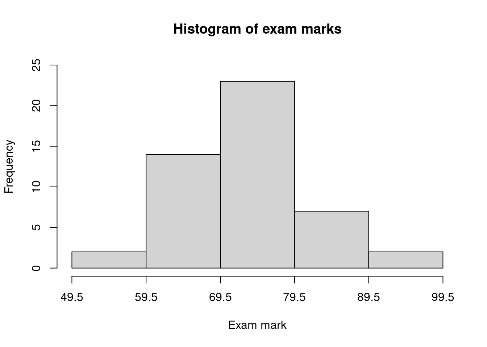

Exercise Set 18 Answers
The following table contains students’ exam marks.
75 85 59 73 88 65 60 86 72 63 78 61 75 78 74 67 60 68 74 66 82 78 94 73 71 83 79 96 67 62 75 81 75 71 65 79 73 80 78 72 74 53 76 65 73 67 72 63 - Create a frequency distribution table with classes 50-59, 60-69,… etc.
- Draw a histogram from the table.
Answers:
Class Frequency 50-59 2 60-69 14 70-79 23 80-89 7 90-99 2

The following table shows the results of 178 measurements of the carbon content of a mixed powder fed to a plant over a period of one month.
Range of values of Carbon (%) Frequency 4.10-4.19 1 4.20-4.29 2 4.30-4.39 7 4.40-4.49 20 4.50-4.59 24 4.60-4.69 31 4.70-4.79 38 4.80-4.89 24 4.90-4.99 21 5.00-5.09 7 5.10-5.19 3 Total 178 From this frequency distribution, construct:
- a histogram
- a frequency polygon
- an ogive
From the ogive, estimate the percentage of measurements showing a carbon content below 5.00%.
Answers:
Approximately 169 samples have a carbon content less than 5%.
The following numbers are the marks obtained by 50 students in an examination:
57 60 37 74 62 40 56 59 80 60 62 94 78 73 56 68 67 79 83 87 90 93 58 46 77 63 66 66 56 71 51 77 53 69 70 69 70 70 47 54 49 54 68 35 64 67 76 73 68 61 - Reduce these marks to a frequency distribution, with equal class widths, having as the first interval 35-44 inclusive. Draw an ogive for the distribution.
- Using the graph, what is the median mark?
- Use your graph to estimate what % of students pass the examination if the pass mark is 55.
Answers:
Class Frequency Cumulative Frequency 35-44 3 3 45-54 7 10 55-64 13 23 65-74 16 39 75-84 7 46 85-94 4 50 The median can be estimated by drawing a horizontal line from the vertical axis at \(50/2=25\) and reading of the corresponding value on the horiztonal axis (blue lines on the plot above). We find the median is approximately 66.
Drawing a vertical line from 55 to the curve and reading from the vertical axis gives the cumulative frequency up to 55 marks as approximately 11 students (red lines on the plot above). Therefore \(50-11=39\) students pass. As a percentage, we have \(39/50 \times 100= 78\%\).
A sample of underweight babies was fed a special diet and the following weight gains (lbs) were observed at the end of three months: 6.7, 2.7, 2.5, 3.6, 3.4, 4.1, 4.8, 5.9, 8.3. What are the mean and standard deviation?
Answer:
\(\bar{x} = 4.67\), \(S= 1.95\) lbs.
In an examination, the marks awarded to the first 40 scripts were:
32, 57, 43, 65, 28, 60, 47, 52, 39, 48, 25, 53, 47, 52, 62, 31, 38, 46, 72, 51, 29, 45, 54, 48, 50, 66, 63, 36, 23, 43, 32, 39, 58, 55, 29, 48, 37, 43, 54, 40.
- Taking classes 14.5-24.5, 24.5-34.5, 34.5-44.5 etc, draw up a frequency distribution table for the marks. Also estimate the relative frequency, cumulative frequency and relative cumulative frequency.
- Draw a histogram, frequency polygon and ogive for this frequency distribution.
- From the frequency table, estimate the mean, variance and standard deviation of the marks.
Answers:
Frequency distribution:
| Class | Frequency | Relative Frequency | Cumulative Frequency | Relative Cumulative Frequency |
|---|---|---|---|---|
| (14.5,24.5] | 1 | 0.025 | 1 | 0.025 |
| (24.5,34.5] | 7 | 0.175 | 8 | 0.200 |
| (34.5,44.5] | 9 | 0.225 | 17 | 0.425 |
| (44.5,54.5] | 14 | 0.350 | 31 | 0.775 |
| (54.5,64.5] | 6 | 0.150 | 37 | 0.925 |
| (64.5,74.5] | 3 | 0.075 | 40 | 1.000 |
Plots:
Table to calculate mean, variance and standard deviation:
| Class | Midpoint \(x\) | Frequency \(f\) | \(xf\) | \(x-\bar{x}\) | \((x-\bar{x})^2\) | \(f(x-\bar{x})^2\) |
|---|---|---|---|---|---|---|
| 14.5-24.5 | 19.5 | 1 | 19.5 | -26.5 | 702.25 | 702.25 |
| 24.5-34.5 | 29.5 | 7 | 206.5 | -16.5 | 272.25 | 1905.75 |
| 34.5-44.5 | 39.5 | 9 | 355.5 | -6.5 | 42.25 | 380.25 |
| 44.5-54.5 | 49.5 | 14 | 693 | 3.5 | 12.25 | 171.5 |
| 54.5-64.5 | 59.5 | 6 | 357 | 13.5 | 182.25 | 1093.5 |
| 64.5-74.5 | 69.5 | 3 | 208.5 | 23.5 | 552.25 | 1656.75 |
| Total | 40 | 1840 | 5910 |
\(\bar{x}=\frac{1}{N}\sum_x xf=\frac{1}{40}\times 1840 = 46\)
\(S^2=\frac{1}{N-1}\sum_x f(x-\bar{x})^2 = \frac{1}{39}\times 5910=151.54\)
\(S=\sqrt{S^2}=\sqrt{151.54}=12.31\)
A city has been criticized for its excessive discharges of untreated sewage into the nearby river. A microbiologist take 45 samples of water downstream from the treated sewage outlet and measures the number of bacteria present. A summary table is as follows:
Number of Bacteria Number of Samples 20-30 5 30-40 20 40-50 15 50-60 5 What are the \(25^{\text{th}}\) and \(75^{\text{th}}\) percentiles?
Answers:
Note \(P_{25}=Q_1\) and \(P_{75}=Q_3\).
\(Q_1\) is between item 11 and 12, which lies in class 30-40. Within this class, there are 6 values before \(Q_1\) and 14 values after: that is, \(\frac{3}{10}\) of the interval lies before and \(\frac{7}{10}\) after. The class width is 10. Therefore, \(Q_1=30+3=33\).
\(Q_3\) is between item 34 and 35, which lies in class 40-50. Within this class, there are 9 values before \(Q_3\) and 6 values after: that is, \(\frac{6}{10}\) of the interval lies before and \(\frac{4}{10}\) after. The class width is 10. Therefore, \(Q_3=40+6=46\).